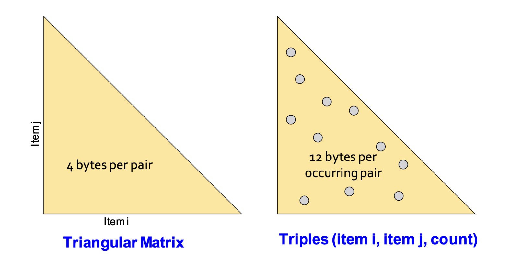

1. Introduction: 현실의 데이터는 너무 크다
지난 포스트들에서는 빈발 항목 집합(Frequent Itemsets)과 연관 규칙(Association Rules)의 개념, 그리고 결과를 유의미하게 압축하는 방법론을 다루었습니다. 이론적으로는 모든 항목 조합을 다 세어보면 될 것 같지만, 현실의 데이터 마이닝 환경에서는 “어떻게 세어야 하는가(How to count)?”가 가장 치명적인 문제가 됩니다.
이번 포스트에서는 장바구니 모델 데이터가 실제 디스크에 어떻게 저장되는지, 그리고 빈발 쌍(Frequent Pairs)을 찾기 위해 메모리 상에서 카운팅을 수행할 때 마주하게 되는 메인 메모리 병목(Main-Memory Bottleneck) 현상에 대해 깊이 있게 살펴보겠습니다.
2. Market-Basket Data의 표현과 연산 비용
대형 마트나 웹 로그와 같은 장바구니 데이터(Market-Basket Data)는 그 크기가 메인 메모리 용량을 아득히 초과할 정도로 거대합니다. 따라서 이러한 데이터는 일반적으로 분산 파일 시스템(DFS)이나 대용량 파일의 형태로 장바구니 단위(Basket-by-basket)로 디스크에 저장됩니다.
장바구니 하나하나의 크기는 작을 수 있지만, 장바구니의 총 개수와 항목(Items)의 총 가짓수는 천문학적입니다.
메인 메모리에 전체 데이터를 한 번에 올릴 수 없기 때문에, 알고리즘은 디스크에서 데이터를 읽어오며 연산을 수행해야 합니다.
Computational Cost (연산 비용의 척도)
- 대규모 데이터를 마이닝할 때 진정한 병목 현상은 CPU 연산 속도가 아니라 디스크 I/O 횟수에서 발생합니다. 따라서 연관 규칙 탐색 알고리즘의 효율성은 데이터를 처음부터 끝까지 몇 번 스캔(Pass)하는가에 의해 결정됩니다. 디스크 접근을 최소화하고, 한 번의 Pass에서 최대한 많은 정보를 메모리에서 처리하는 것이 핵심입니다.
3. Main-Memory Bottleneck (메인 메모리 병목)
장바구니 데이터를 스캔하면서 특정 항목이나 조합이 몇 번 등장했는지 카운팅(Counting)하려면, 그 결과값을 저장할 공간이 메인 메모리에 있어야 합니다. 즉, 우리가 추적하고 셀 수 있는 대상의 가짓수는 메인 메모리의 크기에 의해 물리적인 한계를 맞이합니다.
메모리가 부족하다고 해서 가상 메모리로 디스크 스와핑(Swapping in/out)을 시도하는 것은 성능 측면에서 “재앙(Disaster)”에 가깝습니다. 빈번한 디스크 I/O가 발생하여 알고리즘이 사실상 멈춰버리기 때문입니다.
최적화 기법: 정수 매핑(Integer Mapping)
- 메모리를 아끼기 위한 기초적이고 필수적인 테크닉은 항목(Item)의 이름을 문자열 그대로 쓰지 않는 것입니다.
- 해시 테이블(Hash table)을 구축하여, 식별된 \(n\)개의 서로 다른 고유 항목들을 \(1\)부터 \(n\)까지의 연속된 정수(Integers)로 변환합니다. 이를 통해 각 항목은 단 4바이트(int)로 표현될 수 있습니다.
4. 왜 ’쌍(Pairs)’을 찾는 것이 가장 어려운가?
- 빈발 항목 집합을 탐색할 때, 가장 연산이 까다롭고 메모리를 많이 잡아먹는 단계는 바로 빈발 쌍(Frequent pairs, 크기가 2인 부분집합)을 찾는 과정입니다.
- 단일 항목(1-Itemset)은 항목의 총 개수(\(n\))만큼만 세면 되므로 메모리 부담이 적습니다.
- 3개 이상의 묶음(Triples, Quadruples…)은 크기가 커질수록 해당 묶음이 특정 장바구니에 온전히 포함될 확률이 기하급수적으로(Exponentially) 감소합니다. 즉, 빈발할 확률이 매우 낮기 때문에 고려해야 할 후보군 자체가 적습니다.
- 반면, 2개짜리 쌍(Pairs)은 조합의 수도 \(O(n^2)\)으로 매우 많으면서, 동시에 빈발하게 등장할 가능성도 높습니다.
- 이러한 이유로 데이터 마이닝 알고리즘들은 우선 빈발 쌍(Pairs)을 효율적으로 찾는 문제에 집중한 뒤, 이를 확장하여 더 큰 집합을 찾도록 설계됩니다.
5. 메모리 상에서 Pairs를 카운팅하는 두 가지 접근법
- 모든 가능한 쌍 \((i, j)\)의 등장 횟수(Count)를 메인 메모리에 저장해야 한다고 할 때, 다음과 같은 두 가지 대표적인 자료구조 기법이 존재합니다.

5.1 삼각 행렬 방법 (Triangular-Matrix Method)
원리: \(i < j\) 인 모든 쌍 \((i, j)\)에 대해 고정된 1차원 배열(Matrix)을 만들어 카운트를 저장합니다.
구조: 쌍들은 사전식 순서(Lexicographic order)로 저장됩니다.
\(\{1,2\}, \{1,3\}, \dots, \{1,n\}, \{2,3\}, \{2,4\}, \dots, \{n-1, n\}\)
비용: 각 쌍의 등장 횟수를 저장하는 데 4바이트(정수 1개)가 필요합니다. 배열의 인덱스 자체가 \(i\)와 \(j\)의 정보를 내포하므로 \((i, j)\) 자체를 저장할 필요가 없습니다.
5.2 트리플 방법 (Triples Method)
- 원리: 실제로 장바구니에 한 번이라도 등장한 쌍에 대해서만 카운트를 저장합니다. 해시 테이블을 이용합니다.
- 구조: \((i, j, count)\) 형태의 트리플(튜플) 구조로 저장합니다.
- 비용: 항목 \(i\) (4바이트) + 항목 \(j\) (4바이트) + 등장 횟수 \(c\) (4바이트) = 1쌍당 12바이트가 필요합니다. (해시 테이블 관리를 위한 약간의 오버헤드는 별도로 존재합니다.)
6. 수학적 비교: 언제 어떤 방법이 더 유리한가?
두 방식의 메모리 점유율을 수식으로 비교해 보겠습니다. 전체 항목의 개수를 \(n\)이라고 합시다. 가능한 모든 쌍의 개수는 \(\frac{n(n-1)}{2}\) 개입니다.
- Triangular-Matrix의 총 메모리: \[Total Bytes = 4 \times \frac{n(n-1)}{2}\]
- 이 방식은 실제 쌍의 등장 여부와 관계없이 항상 고정된 메모리를 차지합니다.
- Triples Method의 총 메모리:
- 전체 가능한 쌍 중에서 실제 장바구니 데이터에 한 번이라도 등장하여 \(count > 0\) 인 쌍의 비율을 \(p\)라고 합시다. \[Total Bytes = 12 \times p \times \frac{n(n-1)}{2}\]
결론 (The \(1/3\) Rule):
- Triples 방법이 Triangular-Matrix 방법보다 메모리 측면에서 우수하려면 다음 부등식을 만족해야 합니다. \[12 \times p \times \frac{n(n-1)}{2} < 4 \times \frac{n(n-1)}{2}\] \[12p < 4 \implies p < \frac{1}{3}\]
- 즉, 실제 데이터에 등장하는 항목 쌍의 비율(\(p\))이 전체 가능한 조합의 \(\frac{1}{3}\) 미만일 경우, 희소성(Sparsity)을 띠게 되므로 Triples 방법(해시 테이블 방식)을 사용하는 것이 유리합니다. 반대로 데이터가 빽빽하여 대부분의 조합이 한 번 이상 등장한다면 행렬 방식이 유리합니다.
7. Naïve Algorithm의 한계와 과제
가장 단순한 접근법(Naïve Algorithm)은 메모리 위에 위에서 언급한 구조(Matrix나 Hash Table)를 통째로 올려두고, 데이터를 한 번 스캔(1-Pass)하면서 발견되는 모든 쌍의 카운트를 1씩 올리는 것입니다.
만약 장바구니 \(b\)가 \(n_b\)개의 항목을 담고 있다면, 이 장바구니 하나에서만 \(\frac{n_b(n_b-1)}{2}\) 개의 쌍이 생성되어 카운팅을 요구합니다.
이 방법은 \(n\) (전체 항목의 수)이 커지면 메모리가 \(n^2\) 에 비례하여 폭발적으로 증가하기 때문에 곧바로 한계에 부딪힙니다.
- 월마트(Wal-Mart): 항목 약 \(100,000\)개
- 웹 페이지 분석: 항목 약 \(10,000,000,000\) (10B) 개
만약 아이템이 \(1,000,000\) (1M) 개라고 가정해 봅시다. 쌍의 개수는 약 \(\frac{10^{12}}{2}\) 개이며, Triangular Matrix 방식을 적용하여 4바이트씩만 곱해도 무려 2 Terabytes의 메인 메모리가 필요합니다. 10억(1B) 개라면 상상할 수도 없는 메모리가 요구됩니다.
“Q: 이렇게 항목이 너무 많을 때 우리는 어떻게 더 나은 탐색을 할 수 있을까요?”
- 메모리에 모든 조합을 올려두고 세는 Naïve 방식은 현실에서 불가능합니다. 이를 영리하게 극복하기 위해 등장한 개념이 바로 다음 포스트에서 다룰 A-Priori 알고리즘입니다.